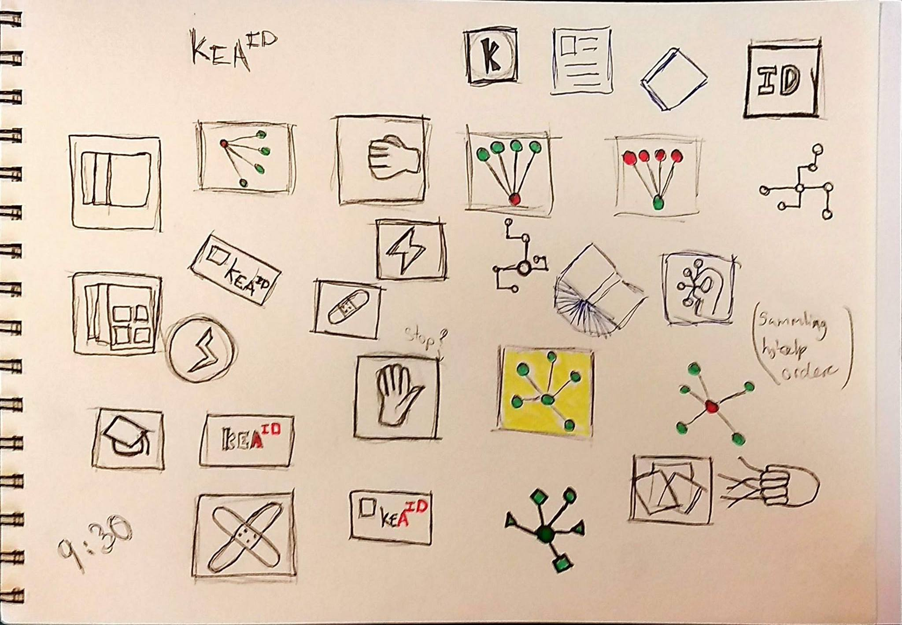

KEA app
prototype
Intro
I vores første projekt i grundlæggende UX fik vi til opgave at udvikle en prototype til en App for kea, som vi til sidst skulle præsentere for KEAs ledelse. Vores målgruppe var KEA studerende, og vores app skulle fungere i forhold til noget studie relevant. Opgaven blev delt op i to processer, første uge skulle vi bruge procesmetoden ‘Design Thinking’ hvor vi designer en løsning. I den anden uge skulle vi implementere løsningen, forberede pitch og afholde pitchen for KEAs ledelse.
I vores endelige idé fandt vi på at lave ‘En app der samler funktioner der hjælper studerende i deres samarbejde.’ Appen indeholder En profil med kontaktinformation og færdighedsparamentre, til elever og undervisere. Gruppe-manager der hjælper med at samle grupper, og effektivisere gruppedannelsen - og gruppeprocessen. En optimeret vejlednings-kø. Skema / kalender / deadlines.
Se det færdige resultat her
Proces
Projektets forløb:
- Introduktion til Design Thinking (Empathize, Define, Ideate, Prototype, Test, Implement.)
- Opsætning af Trello og Burndownchart
- Scrum (Daily scrum hver dag)
- Brugerundersøgelse (Kvantitativ data, Kvalitative interviews)
- Opsætning af Experience Map og persona
- Idégenerering, opstilling af pain points
- Designcharette på problemstillingen
- LoFi prototype (Storyboard, paper prototype)li>
- Test af paper prototype
- Design charette proces 2 og 3
- Analyse af testresultater
- Benchmarking (ideate)
- Design af design charette for endelig idé
- Styletile
- Udvikle HiFi prototype i Adobe XD
- Teste HiFi prototype 3 gange (usabilty test)
- Design af ikon
- Færdiggørelse af HiFi prototype
- Forberedelse af pitch
- Færdiggørelse af processdokumentationsitet
- Færdiggørelse af Præsentationsite
- Pitch for KEAs ledelse

Experiencemap
Inspiration til ikon
Endelige ikon
Mockup af app
Rolle
Projektet er lavet i samarbejde med mine medstuderende Laise Bang, Sophie Engelbreth, Mikkel Lerhmann, Hedi Bjørnum. Vi arbejdede udfra projektstyringsværktøjet Scrum, så der var derfor en varieret arbejdsfordeling. Men vi holde hele tiden hinanden opdateret, så jeg har haft overblik over hele processen.
Tools
Jeg har arbejdet i følgende programmer og programmerings sprog.
Programmering
- Brackets
- HTML5
- CSS
- GitHub
Design
- InDesign
- Photoshop
- Illustrator
- Adobe XD
Projektstyrings værktøj
- Trello
- Scrum